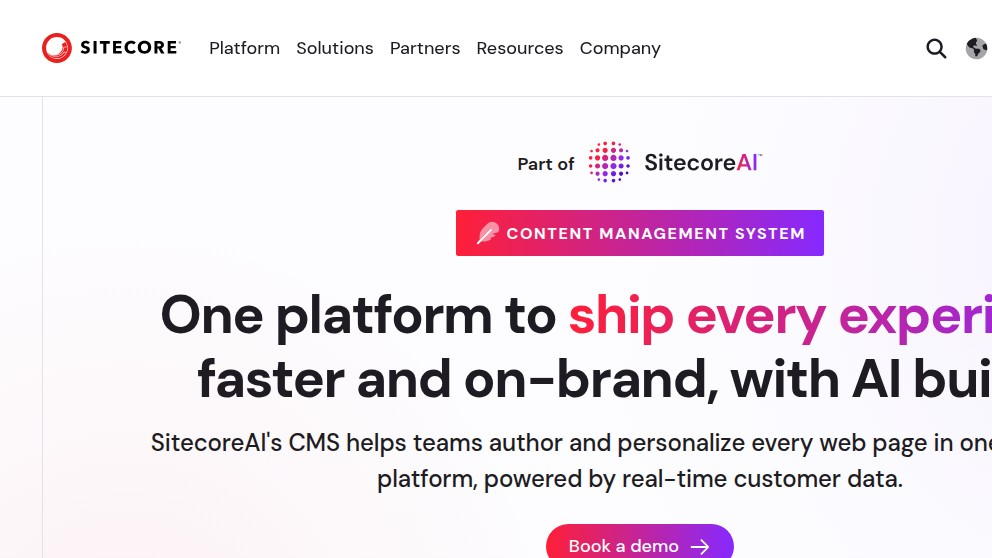
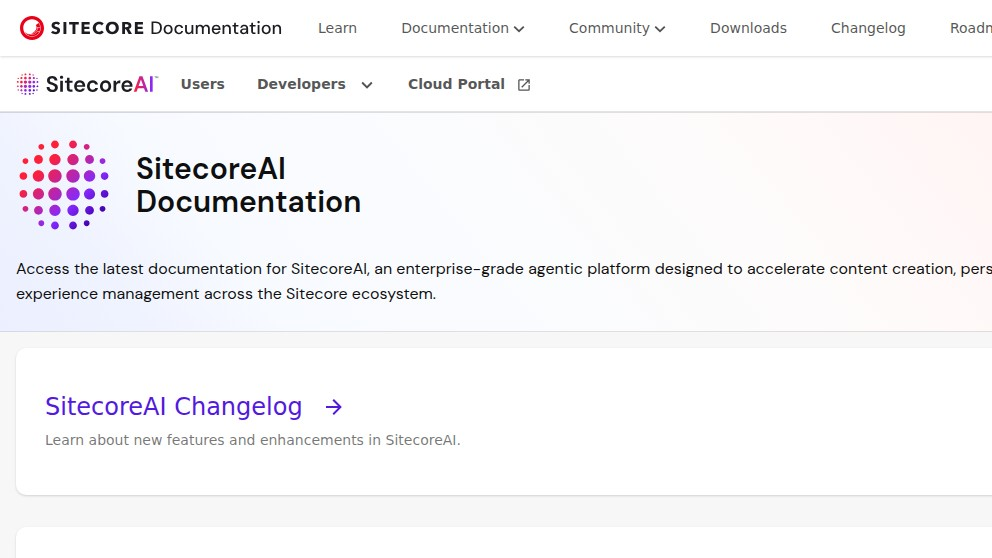
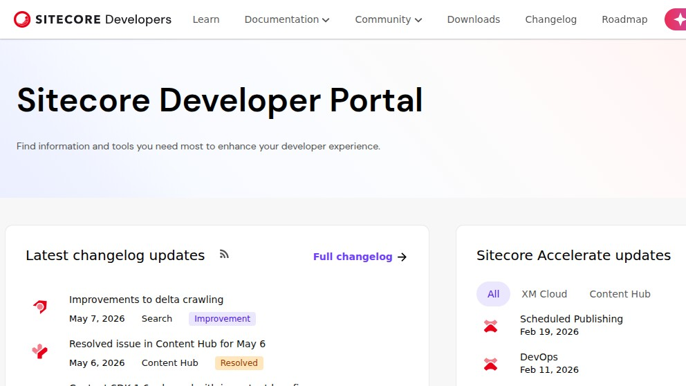

Sitecore XM Cloud: scouting the SaaS-ified Sitecore from outside the sales wall
XM Cloud is what Sitecore became after the 2023–2024 strategic pivot away from on-prem XM/XP licenses. It is cloud-only, sales-led, and as of 2026-05-07 there is no public free trial we could find — every CTA on the marketing site routes to "Book a demo." We spent an evening trying to evaluate it the way someone whose CMO just said "use Sitecore" would: read the docs, hit a public endpoint with curl, look at the pricing page, decide whether this is sane to put on a roadmap. Here is what we found, what we couldn't find, and where it lands next to Contentstack, Adobe Experience Manager, and the open-source headless tier we already self-host.
We're the team behind SimpleReview, a Chrome extension that drafts code-fix PRs on whatever element you click on a broken admin or storefront. We are not affiliated with Sitecore, not partners, not customers, never sat through a demo call. This page is a single scouting session on 2026-05-07 from outside the sales wall: real headless-Chrome screenshots of the public marketing and docs sites, real curl against the public Edge Platform GraphQL endpoint, and the docs URL pattern as it actually exists today. If we got something wrong, open a GitHub issue and we will fix it.
What XM Cloud is, briefly
For about two decades Sitecore shipped Experience Manager (XM) and Experience Platform (XP) as a Windows / .NET / SQL Server stack you installed yourself — IIS, Solr, MongoDB, separate roles for content-delivery vs content-management, and a license cost that opened conversations at six figures a year. XM Cloud is the SaaS-ified version of that product family. Sitecore now runs the infrastructure; you author content in their hosted authoring environment and consume it through their Experience Edge — a Cloudflare-fronted GraphQL delivery layer.
The strategic move from on-prem XM/XP to cloud-first happened publicly across 2023–2024 and is still in progress in 2026. On-prem XM 10.x is still sold, but every signal — net-new investment, new feature releases, the "Composable DXP" framing, the documentation reorganization — is cloud-first. The on-prem stack is in maintenance; the cloud stack is where the roadmap lives. As of 2026, the umbrella has been re-branded again to "SitecoreAI" — the docs landing now reads "SitecoreAI Documentation" and the XM Cloud product page tagline is "One platform to ship every experience faster and on-brand, with AI built-in." The CMS underneath is the same XM Cloud; the marketing wrapper is new.
Friction 1 — there is no public price and no public trial
The first move on any vendor evaluation is the pricing page. With most enterprise SaaS, even where the bottom tier hides behind "Contact us," there's at least a ladder visible — Starter / Growth / Enterprise, with two of the three having a number. With Sitecore XM Cloud the public surface contains zero numbers. The closest thing to a pricing URL we found resolves to a 403 from a clean curl:
$ curl -sI -L \
-w "%{http_code} %{url_effective}\n" \
https://www.sitecore.com/products/xm-cloud/pricing \
-o /dev/null
403 https://www.sitecore.com/products/xm-cloud/pricingThe 403 is Cloudflare bot-mitigation; the path itself does not appear to exist as a real public pricing page. Loaded through a real browser, the parent /products/xm-cloud page returns the marketing hero shown below. It uses three CTAs — "Book a demo," "Get started," and a sticky "Contact" — and none of them route to a self-serve signup.

https://www.sitecore.com/products/xm-cloud via headless Chrome at 992×558. The "Part of SitecoreAI" badge is the 2026 rebrand wrapper; the underlying CMS is still XM Cloud. The single above-the-fold CTA is "Book a demo." We could not find a "Try free" path that actually surfaces a sandbox.If you're trying to put XM Cloud into a five-vendor comparison spreadsheet, you cannot price it from the public site. There is no Starter / Growth / Enterprise table. There is no per-seat cost, no per-environment cost, no per-API-call cost, no published cap on Edge requests. The only path to a number is a sales call. That is a deliberate go-to-market choice — and a perfectly legitimate one for an enterprise CMS — but it means you are not on a shortlist that gets compiled in a single afternoon.
Friction 2 — the docs have been folded into "SitecoreAI"
The canonical XM Cloud documentation URL has historically been doc.sitecore.com/xmc/. As of 2026-05-07 hitting that path lands you on a page titled "SitecoreAI Documentation" — the entire developer documentation hub for XM Cloud, Content Hub, Search, OrderCloud, Personalize, and the rest of the Sitecore portfolio has been consolidated under the new AI-flavoured umbrella. The XM Cloud-specific docs still exist underneath, but the entry point now leads with the "enterprise-grade agentic platform" framing, not "here's how to author content."

https://doc.sitecore.com/xmc. The XM Cloud doc tree has been re-shelved underneath "SitecoreAI Documentation." Functionally the deeper pages are still the same XM Cloud reference, but the landing has been re-pitched at AI-buyers, not developers landing from a Stack Overflow link.The good news on the docs side is the developer portal at developers.sitecore.com is genuinely useful and updated frequently. We saw real, dated changelog entries — "Improvements to delta crawling, May 7 2026," "Resolved issue in Content Hub for May 6," "Scheduled Publishing, Feb 19 2026," "DevOps, Feb 11 2026" — alongside an "Sitecore Accelerate" section listing recent XM Cloud and Content Hub deliveries.

developers.sitecore.com on 2026-05-07. The changelog cadence is genuinely tight — same-day entries, real dates, real product attribution. This is the surface a developer onboarding to XM Cloud actually wants; the SitecoreAI rewrap on doc.sitecore.com is for executives.What the API actually does — one real call
Pricing pages can hide numbers; production endpoints cannot. The Experience Edge — Sitecore's content delivery API — is publicly addressable at edge-platform.sitecorecloud.io. Without an account, without a tenant, without any context, you can hit it with curl and observe how it behaves. The error envelope itself is documentation, in the same way a 401 page on any well-built API tells you what the auth layer expects.
$ curl -s -X POST \
"https://edge-platform.sitecorecloud.io/v1/content/api/graphql/v1" \
-H "Content-Type: application/json" \
-H "sc_apikey: invalid-test-key" \
-d '{"query":"{ __schema { queryType { name } } }"}' \
-i
HTTP/2 404
date: Fri, 08 May 2026 06:31:15 GMT
content-type: application/json
content-length: 211
access-control-allow-origin: *
access-control-allow-headers: *
access-control-allow-methods: *
access-control-expose-headers: *
x-sc-correlation-id: 379b6e807f904ecab9a730a3d9b657d5
strict-transport-security: max-age=2592000; includeSubDomains; preload
server: cloudflare
cf-ray: 9f866ba3696f3a91-FRA
alt-svc: h3=":443"; ma=86400Body of the response, verbatim:
{
"type": "https://datatracker.ietf.org/doc/html/rfc7231#section-6.5.4",
"title": "NotFound",
"detail": "No sitecore context",
"instance": "https://edge-platform.sitecorecloud.io/v1/content/api/graphql/v1",
"status": 404
}That is a clean RFC 7231 / RFC 7807 error envelope. The type field links to the IETF spec — they're using the standard Problem Details format, which most public APIs claim to and few actually do. x-sc-correlation-id is exposed for support tickets. cf-ray ending in -FRA means the request hit Cloudflare's Frankfurt POP (we're on a Hetzner FRA-region box). Total time end-to-end was 120ms; the rejection happened at the edge, not the origin. The detail message — "No sitecore context" — names the missing piece without leaking schema, which is the right call for an unauthenticated probe. As CDNs go, this one is wired with care.
What the call tells us about the developer experience: Experience Edge is a single-tenant-routed GraphQL endpoint where the tenant is identified by an sc_apikey header. With a valid key the same endpoint returns your content graph; without one it returns the same 404 envelope above, which means the tenant boundary is enforced at the edge and there is no surface-area leakage. Compared to the on-prem Sitecore content APIs — historically a tangle of OData, Item Web API, and the GraphQL endpoint baked into the JSS preview server — this is a substantial cleanup.
How XM Cloud compares to the alternatives
We've now done the same scouting walk on a handful of CMSes in adjacent tiers. The honest comparison isn't "which is better" — it's "which procurement category are you in and which trade-offs match." XM Cloud sits at the high-touch end of the headless market, alongside Adobe Experience Manager and Contentstack, well above the open-source self-host tier.
| Dimension | Sitecore XM Cloud | Adobe AEM | Contentstack | Self-host (Strapi/Directus/Payload) |
|---|---|---|---|---|
Time to first curl against your own data |
Behind a sales call. No public sandbox URL we found. | Behind a sales call. | Behind a demo-request form. | ~10 min from docker run. |
| Public pricing | None visible. /pricing path 403s. |
None. | "Contact us" only. | Self-host: free. Cloud tiers: published. |
| Hosting model in 2026 | Cloud-only (XM Cloud). On-prem XM/XP in maintenance. | Cloud-managed via AEM as a Cloud Service; on-prem still sold. | SaaS-only since launch. | You. |
| Delivery layer | Experience Edge — Cloudflare-fronted GraphQL, RFC 7807 errors. | Adobe-hosted dispatcher + CDN. | Multi-region CDN (AWS/Azure/GCP), 7 region URLs. | Whatever you put in front of the container. |
| Auth model on the public CDN endpoint | sc_apikey header, tenant resolved at edge. |
Adobe IMS service token. | api_key + access_token headers. |
BYO. |
| AI surface | "SitecoreAI" — agentic content authoring, brand voice, currently the marketing wrapper. | Adobe GenStudio, deeply Adobe-stack-tied. | Brand-aware writing assistant + agent workflows. | BYO LLM via plugins. |
| Vendor lock-in | High. Authoring lives in their tenant; export tooling exists for support, not migration. | Highest. Deeply coupled to Adobe Experience Cloud. | High. | Low. Database is yours. |
| Realistic procurement window | Months. Master Service Agreement, DPA, security review. | Months. | Weeks to months. | One afternoon. |
None of those rows are a verdict. If your CMO has already chosen the Adobe or Sitecore vendor on the basis of "who do our peer brands use," none of the technical rows will overturn that decision and they shouldn't — what your editorial team can do without engineering involvement, what your legal team is willing to sign, and what your enterprise DAM already integrates with all dominate. If your situation is closer to "a six-person team picking a CMS for the next two years," XM Cloud is a category mismatch, not a worse product.
If you've been told "use Sitecore" — questions worth asking before the demo
This article's audience is partly someone who got handed XM Cloud as a directive from someone above them and wants to be a credible voice in the room. A short list of things we'd want answered on a first call, in roughly the order we'd ask them:
- What does a year cost at our content volume? Sitecore prices on a custom basis — entries, tenants, Edge requests, environments. Get a written number with the variables that move it.
- What is the migration story off? Authoring lives in their tenant. The export path (Sitecore Items as JSON, asset URLs, content tree) exists; ask for a written description of the worst-case "we leave in 18 months" scenario.
- What does the on-prem-to-cloud migration cost from XM/XP 10.x? If you have legacy Sitecore, this is the largest hidden line item. Item compatibility, custom rendering rewrites in JSS / Next.js, deletion of Solr / MongoDB infrastructure all live here.
- What is the SitecoreAI gating story today vs roadmap? The marketing site leads with AI; the docs portal shows steady but un-flashy delivery. Ask which AI features are GA, which are early access, and which are conference-deck.
- What is the SLA on Experience Edge in our region? Cloudflare-fronted is a strong sign; ask for the contractual number and the published incident history.
- Who are our two reference customers in our industry that started in the last 18 months? Old reference customers selected on-prem Sitecore for different reasons. New customers selected XM Cloud for the reasons that matter to you.
Things we'd change about the public surface
- Restore an XM Cloud-specific docs landing. The "SitecoreAI Documentation" rewrap is friction for the developer who lands from a search result expecting "XM Cloud authoring." A
/xmc/sub-landing that opens with the API contract, not the agentic vision, would close that gap. - Publish at least one number on a pricing page. "Starts at $X / month for Y entries / Z Edge requests" is enough to make a developer's shortlist. The current public surface won't.
- Self-serve developer sandbox. A scoped 14-day tenant with the demo content tree pre-loaded would let evaluators write a real Next.js + JSS integration before the first sales call. Contentstack has the same gap; that's not an excuse.
- Cite the on-prem-to-cloud migration cost on the marketing page. The audience that needs XM Cloud most — existing on-prem Sitecore customers — also has the largest unspoken cost. Owning that number publicly is a trust move.
What we'd actually do
In a Fortune-500 brand-team seat, we'd budget the demo. The infrastructure is real, the Edge endpoint is well-engineered, the documentation is detailed once you get past the marketing landing, and the SitecoreAI rebrand is more cosmetic than functional. The AI bets are credible read as the same trajectory as Contentstack's brand-aware writing assistant, not as a step-change.
In a startup of 6–30 people with no editorial team and no legal department, we'd not open the conversation. The procurement window, the lock-in, and the inability to evaluate without a phone call are disqualifying for that segment — not a flaw in the product, just that XM Cloud isn't sold to it. We'd self-host Strapi, Directus, or Payload and revisit once we had revenue, an editorial headcount above five, and a compliance need to justify the line item.
Where this fits
Adjacent scouting notes from the same week: Contentstack — behind the Contact-us wall, Strapi — the open-source headless default, Directus — SQL-first with a real admin, Payload — TypeScript-first headless, Ghost — the headless-blog wedge, PostHog hobby self-host. SimpleReview is the Chrome extension that turns whatever element you click on a broken admin or storefront into a draft code-fix PR — it works the same on a Sitecore-rendered Next.js front end as it does on a Strapi one, because by the time the page renders it is just HTML.
Demo: SimpleReview on a Sitecore XM Cloud issue

"detail":"No sitecore context",
"correlationId":"379b6e807f904ecab9a730a3d9b657d5"}
# missing sc_apikey query param or header
sc_apikey header to resolve the tenant context.